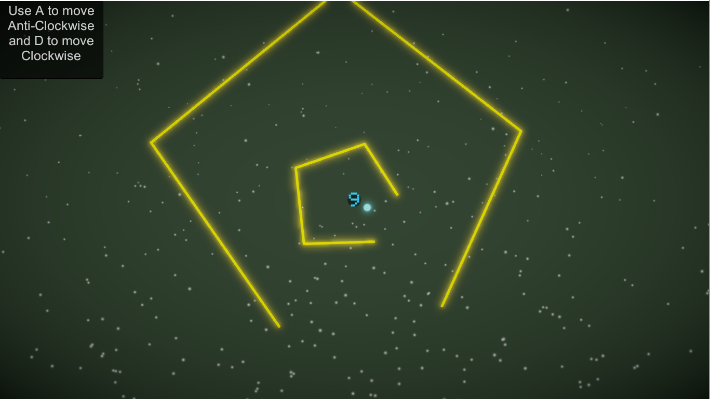
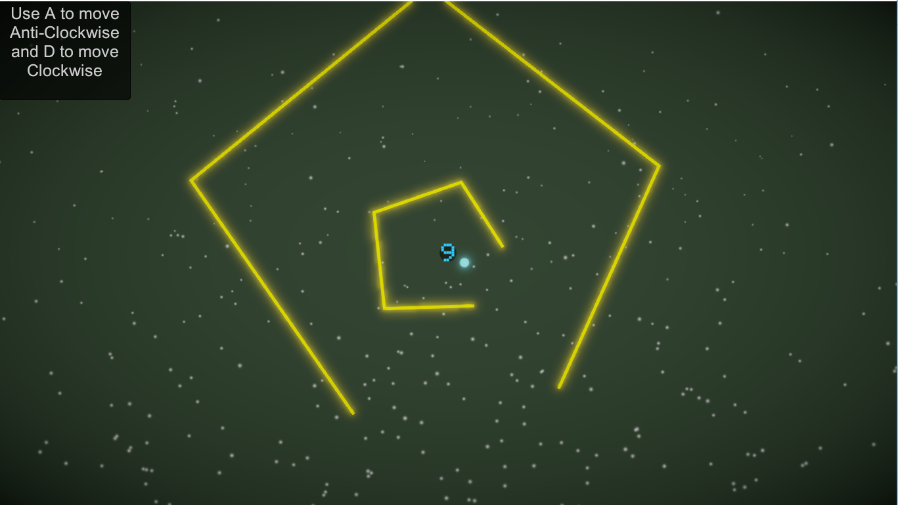

High Concept
A puzzle/Mystery survival game based on SuperHexagon but with less sides, much smaller player and faster gameplay. Get ready to rage quit if you havent rage quitted in SuperHexagon. Basic aim is to rotate your ball around the middle sphere and exit from pentagons.
Genre
Puzzle and Mystery
Platform
Desktop and Mobile friendly
Story
A Blob a blue fire got stuck in a ball and have to escape to return home and there is only 1 obstacle
between him and home which is pentagon. But wait, how many are there? Can he even reach home and get out
of the ball. His only motive right now is to just dodge and keep motivated to dodge furthur
obstacles
Esthetics
- Graphic Style: Cartoonish and Abstract
- Sound: 8-bit theme music with base. There will be simple sounds for collecting powerups, breaking highscore but will have a 8-bit death music in the end.
Gameplay
- Mechanics: Player can only move clockwise or anticlockwise with 'A' and 'D' or arrow keys( left and right ). He has to dodge pentagons circling and coming towards center by just moving into the gaps in them.
- Controls: Keyboard(pair of A/D and leftarrow/rightarrow)
Screenshots
 
